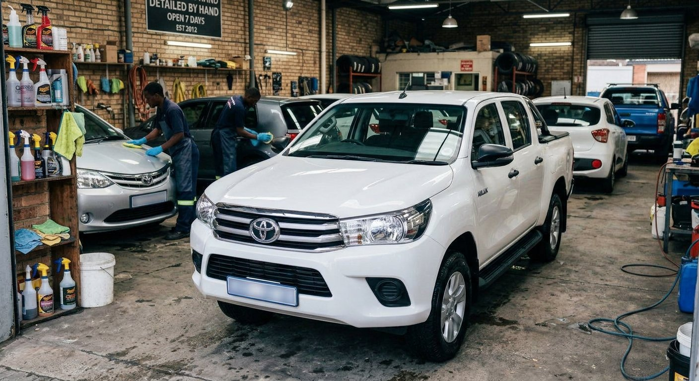
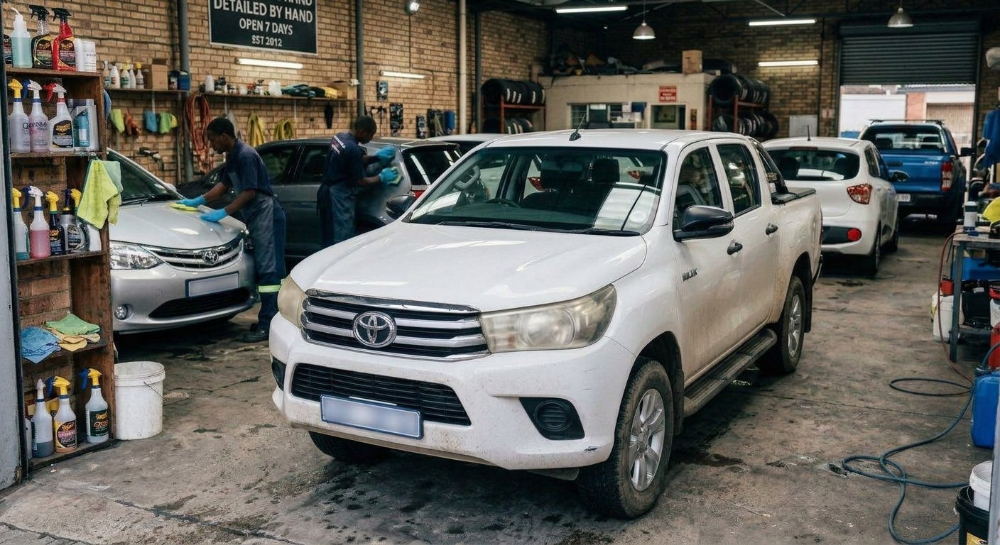
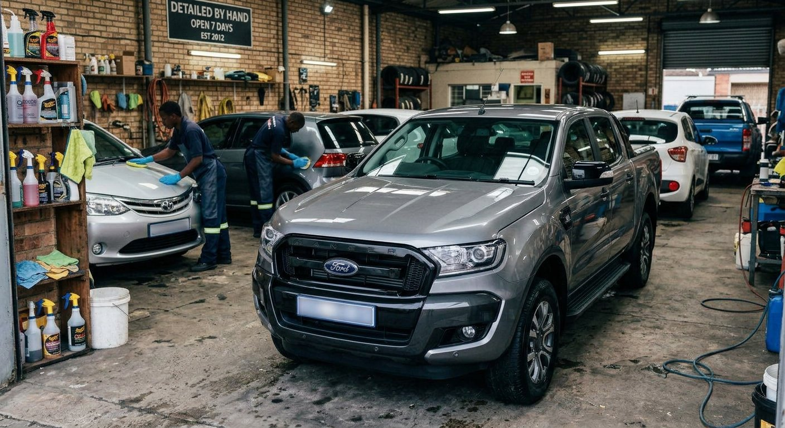
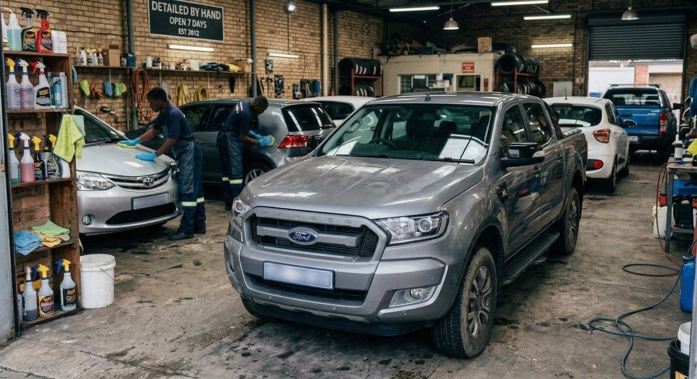
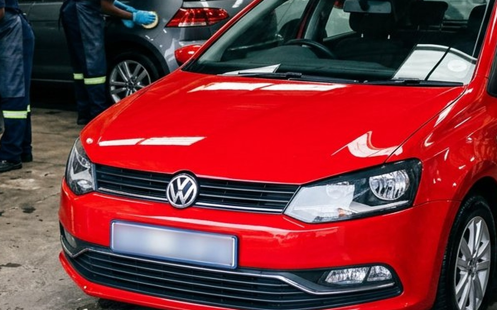
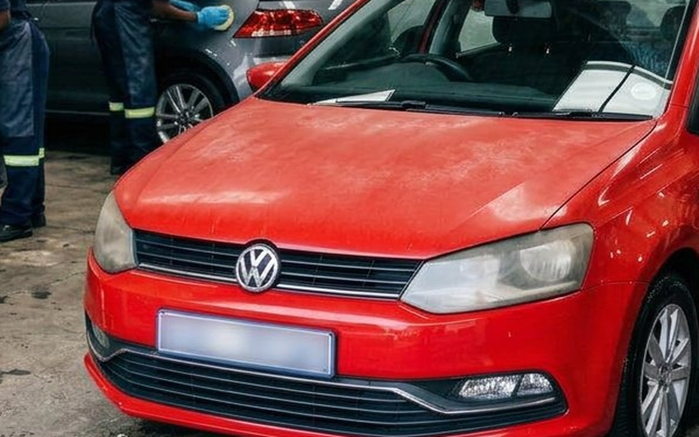
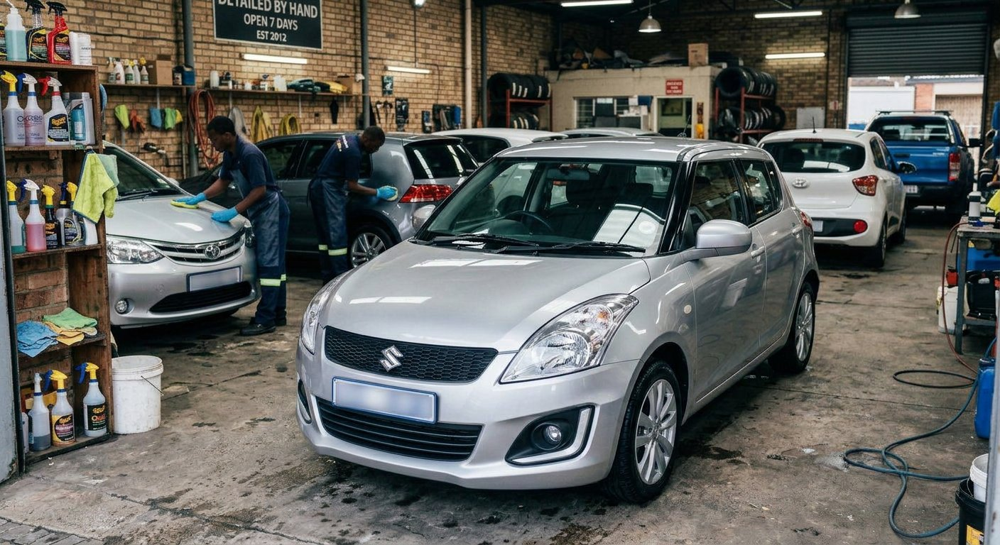
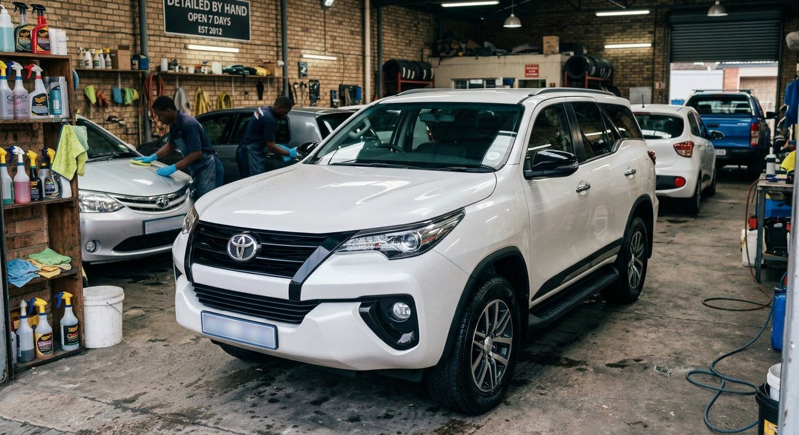
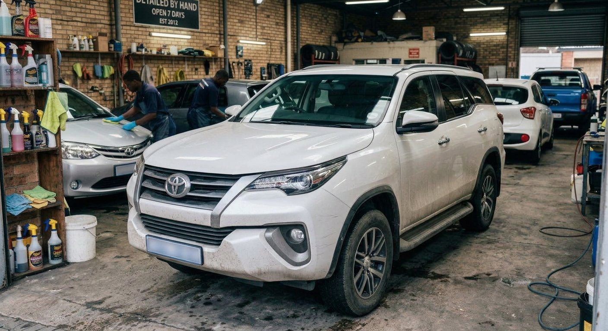

A CLOSER LOOK AT THE STANDARD
Refinement you can explore. Move the divider to compare a simulated weathered finish with its polished counterpart.
Customer Privacy: All customer vehicle registration plates are blurred for privacy. Real Durban workshop showcasing local passenger cars and bakkies.









No finishes match this filter.
Different cars. One uncompromising standard.
Your car could be nextLET’S TALK ABOUT YOUR FINISH
No shortcuts.
No compromises.